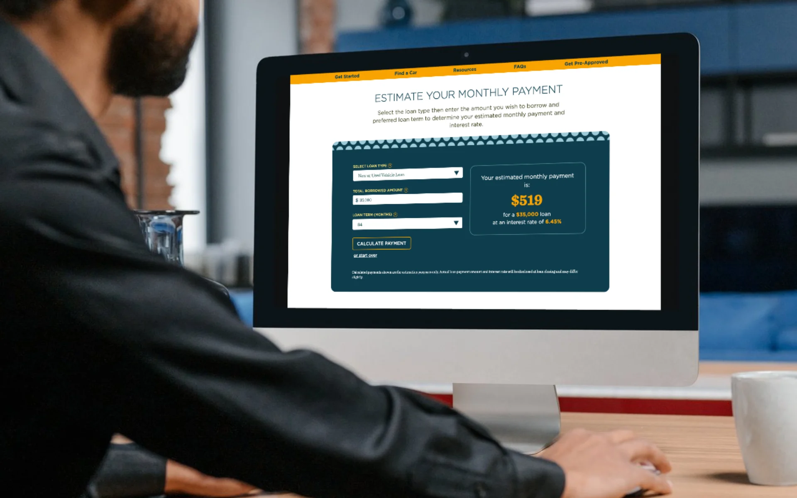
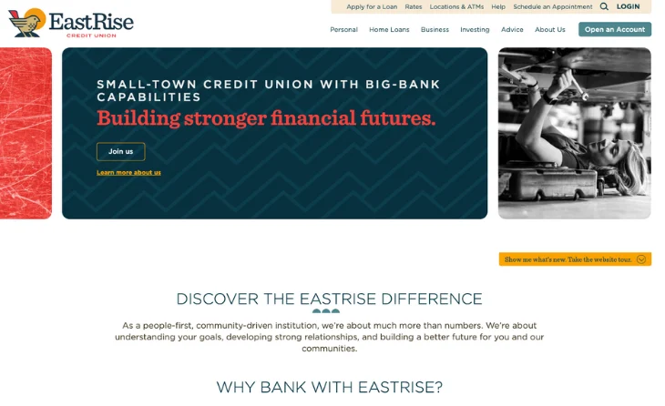

Digital platforms · VSECU and EastRise · 2021–2024
Two credit union websites built for clearer paths.
I was the credit-union-side content and quality partner for two PixelSpoke redesigns: vsecu.com and the new eastrise.com.
My role
The work between strategy and launch.
My archived LinkedIn profile describes the role directly: extensive quality assurance, image curation, coding for content migration, conversion-weekend quality control, and marketing playbook support.
I also built and maintained the photography and brand-asset systems that gave the new sites real Vermont members, employees, businesses, and community settings instead of interchangeable financial imagery.
- Content migration and page-level quality assurance
- Image selection, preparation, and photography
- Front-end coding and CMS support
- Launch-weekend testing and issue tracking
- Ongoing financial education and support content
VSECU · 2021
Make impact understandable and action easier.
PixelSpoke and VSECU set three goals: communicate VSECU’s distinctive impact, handle more of the conversion work directly on the site, and create a more targeted experience for different audiences.
The redesign received a 2022 Silver Davey Award. My work sat inside the implementation: content, imagery, migration, quality control, and the practical work required to turn approved designs into a reliable public site.
EastRise · September 2024
Launch a new institution without losing its local history.
The EastRise site launched as the public expression of a new credit union created from NEFCU and VSECU. PixelSpoke’s launch snapshot lists $3 billion in assets, 18 branches, and 169,000 members.
The project focused on three outcomes: launch the new brand, build a best-in-class website, and convert prospective members. The finished site paired clear product paths and guided tools with local photography of real members and team members.
Its Help and Advice sections support self-service and financial education. Product pages connect people to applications, appointments, rates, calculators, and team members. Dual homepage behavior and customizable promotions create different paths for members and prospective members.
The redesigns
Public screenshots published by PixelSpoke.




Sources
- PixelSpoke: EastRise Credit Union case study
- PixelSpoke: VSECU 2022 Silver Davey Award
- Oliver Ames, October 30, 2025 LinkedIn profile export
- Oliver Ames, 2025 resume
“During the EastRise launch, he demonstrated a deep respect for the brand, a clear understanding of its purpose, and an exceptional ability to translate that vision into compelling, authentic creative work.”
 Brad MeerholzCreative executive and former Adrenaline creative directorLinkedIn recommendation · December 25, 2025
Brad MeerholzCreative executive and former Adrenaline creative directorLinkedIn recommendation · December 25, 2025